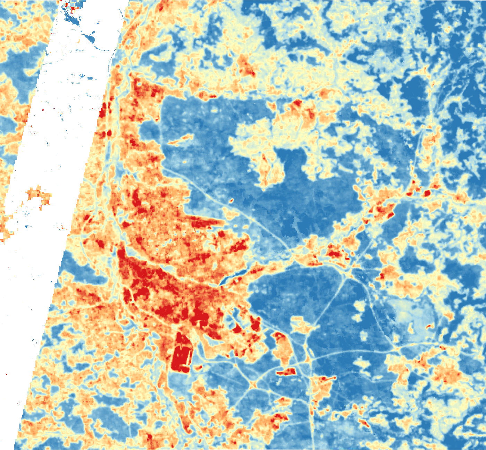

Urban heat islands
Where is it hottest in Nürnberg–Fürth–Erlangen, and how many people live there?
- Built-up areas are about 7 °C hotter than forest in summer: mean land surface temperature (LST) of 34.0 °C vs. 26.8 °C for tree cover (Landsat 8/9, around 10:30 local time).
- 53 % of the residents of the covered area (about 574,000 of 1.08 million) live in the hottest 10 % of the territory (LST ≥ 33.9 °C).
- The Nürnberger Reichswald, rivers and water bodies form the cool end of the temperature range.
- Method and code: notebook 2
Problem
Cities are warmer than their surroundings, mainly because sealed surfaces store heat and there is less vegetation and water to cool the air (Oke 1982). Heat is a health risk, particularly for older people and for people without access to cool places. For a municipality, the first question is spatial: where are the hottest areas, and how many people live in them?
Data
| Dataset | Use |
|---|---|
Landsat 8 and 9, Collection 2 Level 2 (ST_B10), summers 2018–2025 |
Land surface temperature, 30 m (thermal band resampled from 100 m) |
| ESA WorldCover 2021 (v200) | Land cover classes |
| GHSL GHS-POP 2020 (R2023A), 100 m | Modelled population per grid cell |
Processing was done in Google Earth Engine and Python. Code: 02_urban_heat.ipynb, with reusable functions in src/landsat_utils.py.
Method
- For each year 2018–2025, select Landsat 8/9 scenes between 15 May and 15 September, mask cloud, shadow, cirrus, snow and fill pixels with the QA band, and convert
ST_B10to °C. - Take the median per summer, then the mean of the eight summers, to reduce the effect of individual hot or cool days.
- Average LST by WorldCover class to link temperature to land cover.
- Aggregate LST to the 100 m population grid and define hotspots as the hottest 10 % of cells (90th percentile of LST). Sum the population in hotspot cells.
Results
Interactive map: mean summer LST 2018–2025. Use the layer control (top right) to switch basemaps or hide the overlay. The black strip in the west has no thermal data (see Limitations).
| Land cover | Mean LST (°C) |
|---|---|
| Tree cover | 26.8 |
| Herbaceous wetland | 27.4 |
| Water | 27.6 |
| Grassland | 30.3 |
| Cropland | 31.3 |
| Bare | 31.5 |
| Built-up | 34.0 |
- The temperature gradient follows land cover: forest and water are coolest, built-up land hottest, with a difference of about 7 °C between tree cover and built-up land.
- The hottest patches are the dense core of Nürnberg and large sealed areas such as industrial and logistics sites.
- The hotspot threshold (90th percentile) is 33.9 °C. About 574,000 of 1,081,000 residents (53 %) live in cells above it, although these cells are only 10 % of the area. Heat is concentrated where people live.

Recommendation for the municipality
- Use this map to prioritise heat-adaptation measures (trees and shade, unsealing, cool or green roofs, water features) in the hottest residential districts rather than spreading them evenly.
- Protect the cool areas. The Reichswald and river corridors are the coolest parts of the region and should be kept connected to the built-up area.
- Combine this map with social data (age structure, income, housing quality) before deciding where to act: exposure to heat is not the same as vulnerability. The 2022 census grid is the obvious next layer.
- Hotspots with few residents, such as industrial and commercial areas, call for different measures than residential ones (for example, reducing sealing and improving surfaces).
Limitations
- LST is not air temperature. It is the temperature of the surface seen by the satellite and is higher than air temperature on sunny surfaces, especially sealed ones (Voogt & Oke 2003).
- Daytime only. Landsat passes at about 10:30 local time. For health, night-time temperatures matter most, and they are not observed here.
- Resolution. The thermal band has 100 m pixels (resampled to 30 m); street-level differences are not resolved.
- Data gap in the west. Landsat 8/9 Level 2 surface temperature is not available in Earth Engine for a strip along the western edge of the study area (neither Tier 1 nor Tier 2 scenes). This strip is excluded and the population figures refer to the covered area only.
- Modelled population. GHS-POP is a modelled (disaggregated) population grid, not a census count. The estimate of residents in hotspots is therefore approximate.
- Hotspot definition. The 10 % threshold is a convention, and the share of people living in hotspots depends on it. It says nothing about absolute health risk.
- Age was not included. Population age (for example, over 65) was not available in a usable form, so the analysis measures exposure of residents, not vulnerability.
- Eight summers are a composite of typical conditions, not an analysis of individual heat waves.
References
- Oke, T. R. (1982). The energetic basis of the urban heat island. Quarterly Journal of the Royal Meteorological Society, 108(455), 1–24. doi:10.1002/qj.49710845502
- Schiavina, M., Freire, S., Carioli, A. & MacManus, K. (2023). GHS-POP R2023A – GHS population grid multitemporal (1975–2030) [dataset]. European Commission, Joint Research Centre. doi:10.2905/2FF68A52-5B5B-4A22-8F40-C41DA8332CFE
- Voogt, J. A. & Oke, T. R. (2003). Thermal remote sensing of urban climates. Remote Sensing of Environment, 86(3), 370–384. doi:10.1016/S0034-4257(03)00079-8
- Zanaga, D. et al. (2022). ESA WorldCover 10 m 2021 v200 [dataset]. doi:10.5281/zenodo.7254221
Kurzfassung (Deutsch)
Mit Landsat-8/9-Daten (Sommer 2018–2025) wurde die Oberflächentemperatur in Nürnberg, Fürth und Erlangen kartiert. Bebaute Flächen sind im Mittel etwa 7 °C wärmer als Wald (34,0 °C gegenüber 26,8 °C). Die heißesten 10 % der Fläche (ab 33,9 °C) beherbergen rund 53 % der Einwohner des untersuchten Gebiets (ca. 574 000 von 1,08 Mio.). Einschränkungen: Oberflächentemperatur ist nicht Lufttemperatur, es wird nur die Tagessituation (ca. 10:30 Uhr) erfasst, die Bevölkerungsdaten (GHS-POP) sind modelliert, und ein Streifen im Westen ist ohne Daten. Empfehlung: Anpassungsmaßnahmen (Bäume, Entsiegelung, Begrünung) in den heißesten Wohnquartieren priorisieren und die kühlen Flächen wie den Reichswald schützen.